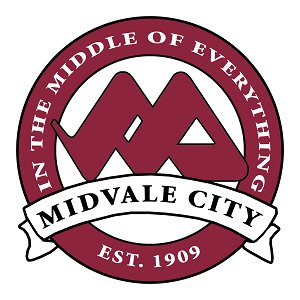

Where I'm From
I am from Midvale, Utah, and I have been here for almost my whole life. I have a single sibling, an older sister, and my mom and dad. I've grown up with cats, and we currently have one princess named Sox (because she likes to drag my dad's socks around the house). My sister also has a small dog named Darsha; she was a rescue that is also my sister's therapy dog. I attended Midvale Elementary, Midvale Middle, and Hillcrest High before coming to Ensign. I moved up to Bountiful in 2017 and then Centerville a year later, with some friends, before moving back to Midvale at the start of the pandemic.
